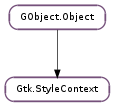

| Name | Type | Flags | Description |
|---|---|---|---|
| direction | Gtk.TextDirection | r/w | Text direction |
| paint-clock | Gdk.FrameClock | r/w | The associated Gdk.FrameClock |
| parent | Gtk.StyleContext | r/w | The parent style context |
| screen | Gdk.Screen | r/w | The associated Gdk.Screen |
| Name | Parameters | Return | Description |
|---|---|---|---|
| changed |
| Name | Type | Access |
|---|---|---|
| parent_object | GObject.Object | r |
Bases: GObject.Object
Gtk.StyleContext is an object that stores styling information affecting a widget defined by Gtk.WidgetPath.
In order to construct the final style information, Gtk.StyleContext queries information from all attached Gtk.StyleProviders. Style providers can be either attached explicitly to the context through Gtk.StyleContext.add_provider (), or to the screen through Gtk.StyleContext.add_provider_for_screen (). The resulting style is a combination of all providers’ information in priority order.
For GTK+ widgets, any Gtk.StyleContext returned by Gtk.Widget.get_style_context () will already have a Gtk.WidgetPath, a Gdk.Screen and RTL/LTR information set. The style context will be also updated automatically if any of these settings change on the widget.
If you are using the theming layer standalone, you will need to set a widget path and a screen yourself to the created style context through Gtk.StyleContext.set_path () and Gtk.StyleContext.set_screen (), as well as updating the context yourself using Gtk.StyleContext.invalidate () whenever any of the conditions change, such as a change in the Gtk.Settings :gtk-theme-name setting or a hierarchy change in the rendered widget.
Transition animations
Gtk.StyleContext has built-in support for state change transitions. Note that these animations respect the Gtk.Settings :gtk-enable-animations setting.
For simple widgets where state changes affect the whole widget area, calling Gtk.StyleContext.notify_state_change () with a None region is sufficient to trigger the transition animation. And GTK+ already does that when Gtk.Widget.set_state () or Gtk.Widget.set_state_flags () are called.
If a widget needs to declare several animatable regions (i.e. not affecting the whole widget area), its Gtk.Widget ::draw signal handler needs to wrap the render operations for the different regions with calls to Gtk.StyleContext.push_animatable_region () and Gtk.StyleContext.pop_animatable_region (). These functions take an identifier for the region which must be unique within the style context. For simple widgets with a fixed set of animatable regions, using an enumeration works well:
Using an enumeration to identify animatable regions
enum {
REGION_ENTRY,
REGION_BUTTON_UP,
REGION_BUTTON_DOWN
};
...
gboolean
spin_button_draw (GtkWidget *widget,
cairo_t *cr)
{
GtkStyleContext *context;
context = gtk_widget_get_style_context (widget);
gtk_style_context_push_animatable_region (context,
GUINT_TO_POINTER (REGION_ENTRY));
gtk_render_background (cr, 0, 0, 100, 30);
gtk_render_frame (cr, 0, 0, 100, 30);
gtk_style_context_pop_animatable_region (context);
...
}
For complex widgets with an arbitrary number of animatable regions, it is up to the implementation to come up with a way to uniquely identify each animatable region. Using pointers to internal structs is one way to achieve this:
Using struct pointers to identify animatable regions
void
notebook_draw_tab (GtkWidget *widget,
NotebookPage *page,
cairo_t *cr)
{
gtk_style_context_push_animatable_region (context, page);
gtk_render_extension (cr, page->x, page->y, page->width, page->height);
gtk_style_context_pop_animatable_region (context);
}
The widget also needs to notify the style context about a state change for a given animatable region so the animation is triggered.
Triggering a state change animation on a region
gboolean
notebook_motion_notify (GtkWidget *widget,
GdkEventMotion *event)
{
GtkStyleContext *context;
NotebookPage *page;
context = gtk_widget_get_style_context (widget);
page = find_page_under_pointer (widget, event);
gtk_style_context_notify_state_change (context,
gtk_widget_get_window (widget),
page,
GTK_STATE_PRELIGHT,
TRUE);
...
}
Gtk.StyleContext.notify_state_change () accepts None region IDs as a special value, in this case, the whole widget area will be updated by the animation.
Style classes and regions
Widgets can add style classes to their context, which can be used to associate different styles by class (see ). Theme engines can also use style classes to vary their rendering. GTK+ has a number of predefined style classes: Gtk.STYLE_CLASS_CELL, Gtk.STYLE_CLASS_ENTRY, Gtk.STYLE_CLASS_BUTTON, Gtk.STYLE_CLASS_COMBOBOX_ENTRY, Gtk.STYLE_CLASS_CALENDAR, Gtk.STYLE_CLASS_SLIDER, Gtk.STYLE_CLASS_BACKGROUND, Gtk.STYLE_CLASS_RUBBERBAND, Gtk.STYLE_CLASS_TOOLTIP, Gtk.STYLE_CLASS_MENU, Gtk.STYLE_CLASS_MENUBAR, Gtk.STYLE_CLASS_MENUITEM, Gtk.STYLE_CLASS_TOOLBAR, Gtk.STYLE_CLASS_PRIMARY_TOOLBAR, Gtk.STYLE_CLASS_INLINE_TOOLBAR, Gtk.STYLE_CLASS_RADIO, Gtk.STYLE_CLASS_CHECK, Gtk.STYLE_CLASS_TROUGH, Gtk.STYLE_CLASS_SCROLLBAR, Gtk.STYLE_CLASS_SCALE, Gtk.STYLE_CLASS_SCALE_HAS_MARKS_ABOVE, Gtk.STYLE_CLASS_SCALE_HAS_MARKS_BELOW, Gtk.STYLE_CLASS_HEADER, Gtk.STYLE_CLASS_ACCELERATOR, Gtk.STYLE_CLASS_GRIP, Gtk.STYLE_CLASS_DOCK, Gtk.STYLE_CLASS_PROGRESSBAR, Gtk.STYLE_CLASS_SPINNER, Gtk.STYLE_CLASS_EXPANDER, Gtk.STYLE_CLASS_SPINBUTTON, Gtk.STYLE_CLASS_NOTEBOOK, Gtk.STYLE_CLASS_VIEW, Gtk.STYLE_CLASS_SIDEBAR, Gtk.STYLE_CLASS_IMAGE, Gtk.STYLE_CLASS_HIGHLIGHT, Gtk.STYLE_CLASS_FRAME, Gtk.STYLE_CLASS_DND, Gtk.STYLE_CLASS_PANE_SEPARATOR, Gtk.STYLE_CLASS_SEPARATOR, Gtk.STYLE_CLASS_INFO, Gtk.STYLE_CLASS_WARNING, Gtk.STYLE_CLASS_QUESTION, Gtk.STYLE_CLASS_ERROR, Gtk.STYLE_CLASS_HORIZONTAL, Gtk.STYLE_CLASS_VERTICAL, Gtk.STYLE_CLASS_TOP, Gtk.STYLE_CLASS_BOTTOM, Gtk.STYLE_CLASS_LEFT, Gtk.STYLE_CLASS_RIGHT,
Widgets can also add regions with flags to their context. The regions used by GTK+ widgets are:
Region Flags Macro Used by
row even, odd Gtk.STYLE_REGION_ROW Gtk.TreeView
column first, last, sorted Gtk.STYLE_REGION_COLUMN Gtk.TreeView
column-header
Gtk.STYLE_REGION_COLUMN_HEADER
tab even, odd, first, last Gtk.STYLE_REGION_TAB Gtk.Notebook
Custom styling in UI libraries and applications
If you are developing a library with custom Gtk.Widget s that render differently than standard components, you may need to add a Gtk.StyleProvider yourself with the Gtk.STYLE_PROVIDER_PRIORITY_FALLBACK priority, either a Gtk.CssProvider or a custom object implementing the Gtk.StyleProvider interface. This way theming engines may still attempt to style your UI elements in a different way if needed so.
If you are using custom styling on an applications, you probably want then to make your style information prevail to the theme’s, so you must use a Gtk.StyleProvider with the Gtk.STYLE_PROVIDER_PRIORITY_APPLICATION priority, keep in mind that the user settings in XDG_CONFIG_HOME/gtk-3.0/gtk.css will still take precedence over your changes, as it uses the Gtk.STYLE_PROVIDER_PRIORITY_USER priority.
If a custom theming engine is needed, you probably want to implement a Gtk.StyleProvider yourself so it points to your Gtk.ThemingEngine implementation, as Gtk.CssProvider uses Gtk.ThemingEngine.load () which loads the theming engine module from the standard paths.
| Parameters: |
|
|---|
Adds a global style provider to screen, which will be used in style construction for all Gtk.StyleContexts under screen.
GTK+ uses this to make styling information from Gtk.Settings available.
If both priorities are the same, A Gtk.StyleProvider added through Gtk.StyleContext.add_provider () takes precedence over another added through this function.
| Returns: | A newly created Gtk.StyleContext. |
|---|---|
| Return type: | Gtk.StyleContext |
Creates a standalone Gtk.StyleContext, this style context won’t be attached to any widget, so you may want to call Gtk.StyleContext.set_path () yourself.
This function is only useful when using the theming layer separated from GTK+, if you are using Gtk.StyleContext to theme Gtk.Widget s, use Gtk.Widget.get_style_context () in order to get a style context ready to theme the widget.
| Parameters: |
|
|---|
Removes provider from the global style providers list in screen.
| Parameters: | screen (Gdk.Screen) – a Gdk.Screen |
|---|
This function recomputes the styles for all widgets under a particular Gdk.Screen. This is useful when some global parameter has changed that affects the appearance of all widgets, because when a widget gets a new style, it will both redraw and recompute any cached information about its appearance. As an example, it is used when the color scheme changes in the related Gtk.Settings object.
| Parameters: | class_name (str) – class name to use in styling |
|---|
Adds a style class to context, so posterior calls to Gtk.StyleContext.get () or any of the gtk_render_*() functions will make use of this new class for styling.
In the CSS file format, a Gtk.Entry defining an “entry” class, would be matched by:
GtkEntry.entry { ... }
While any widget defining an “entry” class would be matched by: .entry { ... }
| Parameters: |
|
|---|
Adds a style provider to context, to be used in style construction. Note that a style provider added by this function only affects the style of the widget to which context belongs. If you want to affect the style of all widgets, use Gtk.StyleContext.add_provider_for_screen ().
If both priorities are the same, A Gtk.StyleProvider added through this function takes precedence over another added through Gtk.StyleContext.add_provider_for_screen ().
| Parameters: |
|
|---|
Adds a region to context, so posterior calls to Gtk.StyleContext.get () or any of the gtk_render_*() functions will make use of this new region for styling.
In the CSS file format, a Gtk.TreeView defining a “row” region, would be matched by:
GtkTreeView row { ... }
Pseudo-classes are used for matching flags, so the two following rules:
GtkTreeView row:nth-child(even) { ... }
GtkTreeView row:nth-child(odd) { ... }
would apply to even and odd rows, respectively.
Region names must only contain lowercase letters and ‘-‘, starting always with a lowercase letter.
| Parameters: | region_id (object or None) – animatable region to stop, or None. See Gtk.StyleContext.push_animatable_region () |
|---|
Stops all running animations for region_id and all animatable regions underneath.
A None region_id will stop all ongoing animations in context, when dealing with a Gtk.StyleContext obtained through Gtk.Widget.get_style_context (), this is normally done for you in all circumstances you would expect all widget to be stopped, so this should be only used in complex widgets with different animatable regions.
| Parameters: | state (Gtk.StateFlags) – state to retrieve the color for |
|---|---|
| Return type: | color: Gdk.RGBA |
Gets the background color for a given state.
| Parameters: | state (Gtk.StateFlags) – state to retrieve the border for |
|---|---|
| Return type: | border: Gtk.Border |
Gets the border for a given state as a Gtk.Border. See Gtk.STYLE_PROPERTY_BORDER_WIDTH.
| Parameters: | state (Gtk.StateFlags) – state to retrieve the color for |
|---|---|
| Return type: | color: Gdk.RGBA |
Gets the border color for a given state.
| Parameters: | state (Gtk.StateFlags) – state to retrieve the color for |
|---|---|
| Return type: | color: Gdk.RGBA |
Gets the foreground color for a given state.
| Returns: | the widget direction |
|---|---|
| Return type: | Gtk.TextDirection |
Returns the widget direction used for rendering.
| Parameters: | state (Gtk.StateFlags) – state to retrieve the font for |
|---|---|
| Returns: | the Pango.FontDescription for the given state. This object is owned by GTK+ and should not be freed. |
| Return type: | Pango.FontDescription |
Returns the font description for a given state. The returned object is const and will remain valid until the Gtk.StyleContext ::changed signal happens.
| Returns: | a Gdk.FrameClock, or None if context does not have an attached frame clock. |
|---|---|
| Return type: | Gdk.FrameClock |
Returns the Gdk.FrameClock to which context is attached.
| Returns: | the junction sides |
|---|---|
| Return type: | Gtk.JunctionSides |
Returns the sides where rendered elements connect visually with others.
| Parameters: | state (Gtk.StateFlags) – state to retrieve the border for |
|---|---|
| Return type: | margin: Gtk.Border |
Gets the margin for a given state as a Gtk.Border. See Gtk.STYLE_PROPERTY_MARGIN.
| Parameters: | state (Gtk.StateFlags) – state to retrieve the padding for |
|---|---|
| Return type: | padding: Gtk.Border |
Gets the padding for a given state as a Gtk.Border. See Gtk.STYLE_PROPERTY_PADDING.
| Returns: | the parent context or None |
|---|---|
| Return type: | Gtk.StyleContext |
Gets the parent context set via Gtk.StyleContext.set_parent (). See that function for details.
| Returns: | A Gtk.WidgetPath |
|---|---|
| Return type: | Gtk.WidgetPath |
Returns the widget path used for style matching.
| Parameters: |
|
|---|---|
| Return type: | value: GObject.Value |
Gets a style property from context for the given state.
When value is no longer needed, GObject.Value.unset () must be called to free any allocated memory.
| Returns: | a Gdk.Screen. |
|---|---|
| Return type: | Gdk.Screen |
Returns the Gdk.Screen to which context is attached.
| Parameters: | property (str) – style property name |
|---|---|
| Returns: | None or the section where value was defined |
| Return type: | Gtk.CssSection |
Queries the location in the CSS where property was defined for the current context. Note that the state to be queried is taken from Gtk.StyleContext.get_state ().
If the location is not available, None will be returned. The location might not be available for various reasons, such as the property being overridden, property not naming a supported CSS property or tracking of definitions being disabled for performance reasons.
Shorthand CSS properties cannot be queried for a location and will always return None.
| Returns: | the state flags |
|---|---|
| Return type: | Gtk.StateFlags |
Returns the state used when rendering.
| Parameters: |
|
|---|
Gets the value for a widget style property.
When value is no longer needed, GObject.Value.unset () must be called to free any allocated memory.
| Parameters: | class_name (str) – a class name |
|---|---|
| Returns: | True if context has class_name defined |
| Return type: | bool |
Returns True if context currently has defined the given class name
| Parameters: | region_name (str) – a region name |
|---|---|
| Returns: | True if region is defined |
| Return type: | bool, flags_return: Gtk.RegionFlags |
Returns True if context has the region defined. If flags_return is not None, it is set to the flags affecting the region.
Invalidates context style information, so it will be reconstructed again.
If you’re using a Gtk.StyleContext returned from Gtk.Widget.get_style_context (), you do not need to call this yourself.
| Returns: | a GLib.List of strings with the currently defined classes. The contents of the list are owned by GTK+, but you must free the list itself with GLib.List.free () when you are done with it. |
|---|---|
| Return type: | [str] |
Returns the list of classes currently defined in context.
| Returns: | a GLib.List of strings with the currently defined regions. The contents of the list are owned by GTK+, but you must free the list itself with GLib.List.free () when you are done with it. |
|---|---|
| Return type: | [str] |
Returns the list of regions currently defined in context.
| Parameters: | color_name (str) – color name to lookup |
|---|---|
| Returns: | True if color_name was found and resolved, False otherwise |
| Return type: | bool, color: Gdk.RGBA |
Looks up and resolves a color name in the context color map.
| Parameters: | stock_id (str) – an icon name |
|---|---|
| Returns: | The looked up Gtk.IconSet, or None |
| Return type: | Gtk.IconSet |
Looks up stock_id in the icon factories associated to context and the default icon factory, returning an icon set if found, otherwise None.
| Parameters: |
|
|---|
Notifies a state change on context, so if the current style makes use of transition animations, one will be started so all rendered elements under region_id are animated for state state being set to value state_value.
The window parameter is used in order to invalidate the rendered area as the animation runs, so make sure it is the same window that is being rendered on by the gtk_render_*() functions.
If region_id is None, all rendered elements using context will be affected by this state transition.
As a practical example, a Gtk.Button notifying a state transition on the prelight state:
gtk_style_context_notify_state_change (context,
gtk_widget_get_window (widget),
NULL,
GTK_STATE_PRELIGHT,
button->in_button);
Can be handled in the CSS file like this:
GtkButton {
background-color: &numf00
}
GtkButton:hover {
background-color: &numfff;
transition: 200ms linear
}
This combination will animate the button background from red to white if a pointer enters the button, and back to red if the pointer leaves the button.
Note that state is used when finding the transition parameters, which is why the style places the transition under the :hover pseudo-class.
Pops an animatable region from context. See Gtk.StyleContext.push_animatable_region ().
| Parameters: | region_id (object) – unique identifier for the animatable region |
|---|
Pushes an animatable region, so all further gtk_render_*() calls between this call and the following Gtk.StyleContext.pop_animatable_region () will potentially show transition animations for this region if Gtk.StyleContext.notify_state_change () is called for a given state, and the current theme/style defines transition animations for state changes.
The region_id used must be unique in context so the theming engine can uniquely identify rendered elements subject to a state transition.
| Parameters: | class_name (str) – class name to remove |
|---|
Removes class_name from context.
| Parameters: | provider (Gtk.StyleProvider) – a Gtk.StyleProvider |
|---|
Removes provider from the style providers list in context.
| Parameters: | region_name (str) – region name to unset |
|---|
Removes a region from context.
Restores context state to a previous stage. See Gtk.StyleContext.save ().
Saves the context state, so all modifications done through Gtk.StyleContext.add_class (), Gtk.StyleContext.remove_class (), Gtk.StyleContext.add_region (), Gtk.StyleContext.remove_region () or Gtk.StyleContext.set_junction_sides () can be reverted in one go through Gtk.StyleContext.restore ().
| Parameters: |
|
|---|
This function is analogous to Gdk.Window.scroll (), and should be called together with it so the invalidation areas for any ongoing animation are scrolled together with it.
| Parameters: | window (Gdk.Window) – a Gdk.Window |
|---|
Sets the background of window to the background pattern or color specified in context for its current state.
| Parameters: | direction (Gtk.TextDirection) – the new direction. |
|---|
Sets the reading direction for rendering purposes.
If you are using a Gtk.StyleContext returned from Gtk.Widget.get_style_context (), you do not need to call this yourself.
| Parameters: | frame_clock (Gdk.FrameClock) – a Gdk.FrameClock |
|---|
Attaches context to the given frame clock.
The frame clock is used for the timing of animations.
If you are using a Gtk.StyleContext returned from Gtk.Widget.get_style_context (), you do not need to call this yourself.
| Parameters: | sides (Gtk.JunctionSides) – sides where rendered elements are visually connected to other elements |
|---|
Sets the sides where rendered elements (mostly through Gtk.render_frame ()) will visually connect with other visual elements.
This is merely a hint that may or may not be honored by theming engines.
Container widgets are expected to set junction hints as appropriate for their children, so it should not normally be necessary to call this function manually.
| Parameters: | parent (Gtk.StyleContext or None) – the new parent or None |
|---|
Sets the parent style context for context. The parent style context is used to implement inheritance of properties.
If you are using a Gtk.StyleContext returned from Gtk.Widget.get_style_context (), the parent will be set for you.
| Parameters: | path (Gtk.WidgetPath) – a Gtk.WidgetPath |
|---|
Sets the Gtk.WidgetPath used for style matching. As a consequence, the style will be regenerated to match the new given path.
If you are using a Gtk.StyleContext returned from Gtk.Widget.get_style_context (), you do not need to call this yourself.
| Parameters: | scale (int) – scale |
|---|
Sets the scale to use when getting image assets for the style .
| Parameters: | screen (Gdk.Screen) – a Gdk.Screen |
|---|
Attaches context to the given screen.
The screen is used to add style information from ‘global’ style providers, such as the screens Gtk.Settings instance.
If you are using a Gtk.StyleContext returned from Gtk.Widget.get_style_context (), you do not need to call this yourself.
| Parameters: | flags (Gtk.StateFlags) – state to represent |
|---|
Sets the state to be used when rendering with any of the gtk_render_*() functions.
| Parameters: | state (Gtk.StateType) – a widget state |
|---|---|
| Returns: | True if there is a running transition animation for state. |
| Return type: | bool, progress: float |
Returns True if there is a transition animation running for the current region (see Gtk.StyleContext.push_animatable_region ()).
If progress is not None, the animation progress will be returned there, 0.0 means the state is closest to being unset, while 1.0 means it’s closest to being set. This means transition animation will run from 0 to 1 when state is being set and from 1 to 0 when it’s being unset.